Extraction review - Group 7 (en)
127 questions from group-7-en.pdf - 114 with a picture - 1 with an uncertain picture mapping. The correct option is highlighted in green.
Uncertain picture mapping:
821.PDF page 1 - g7-q001
Which vehicles are permitted to park?
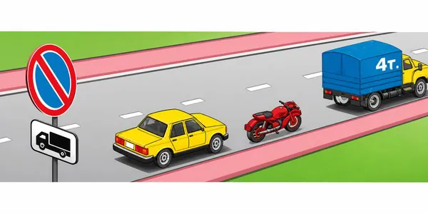
- Only the motorcycle.
- Only the truck.
- Only the passenger car.
- The passenger car and the motorcycle.
- All vehicles.
Answer: 4
2.PDF page 1 - g7-q002
Parking is prohibited:
(no picture)
- On bridges, elevated roadways, and overpasses.
- Under bridges, elevated roadways, and overpasses.
- In all of the listed cases.
Answer: 3
3.PDF page 2 - g7-q003
Is it permitted to drop off a passenger at a location where a solid yellow line is marked on the upper surface of the curb and a “No Stopping” sign is posted?

- Permitted.
- Prohibited.
- Permitted if no public transit vehicles are present.
- Permitted only for public transit vehicles.
Answer: 2
4.PDF page 2 - g7-q004
Does the prohibitory sign apply to the section of road where the driver has stopped?
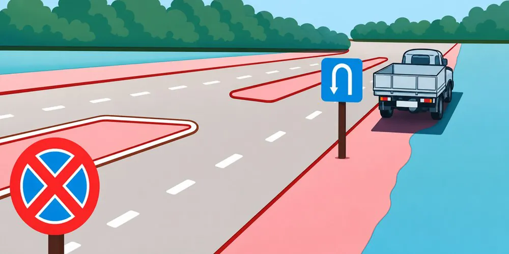
- Yes.
- No.
Answer: 1
5.PDF page 3 - g7-q005
Is parking the automobile at the indicated location permitted?
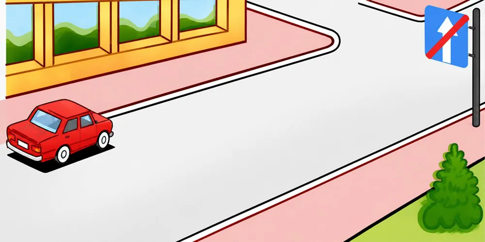
- Permitted.
- Prohibited.
Answer: 1
6.PDF page 3 - g7-q006
Within what distance of a railroad crossing is parking prohibited?
(no picture)
- 300 m.
- 150 m.
- 100 m.
- 50 m.
- 25 m.
Answer: 5
7.PDF page 3 - g7-q007
In this situation, is stopping to drop off a passenger permitted?
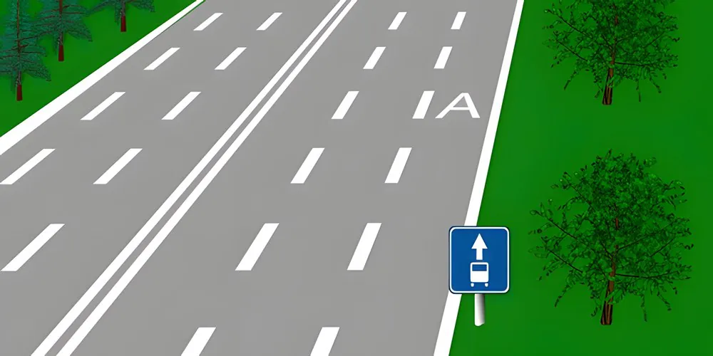
- Permitted if it does not interfere with the movement of public transit vehicles.
- Prohibited.
Answer: 1
8.PDF page 4 - g7-q008
Which driver is required to stop?
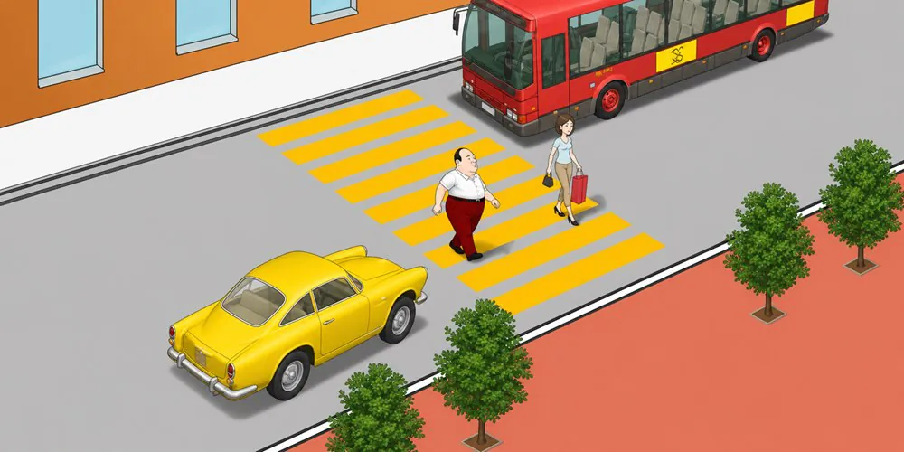
- The passenger-car driver.
- The bus driver.
- Both drivers.
Answer: 1
9.PDF page 4 - g7-q009
This pavement marking permits traffic:
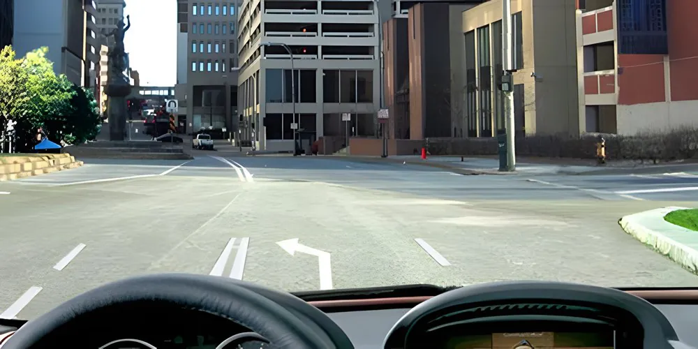
- To the left only.
- To the left and by making a U-turn.
- By making a U-turn only.
- Straight ahead, to the left, and by making a U-turn.
Answer: 2
10.PDF page 5 - g7-q010
Which vehicles are permitted to park within the area where this traffic sign is in effect?
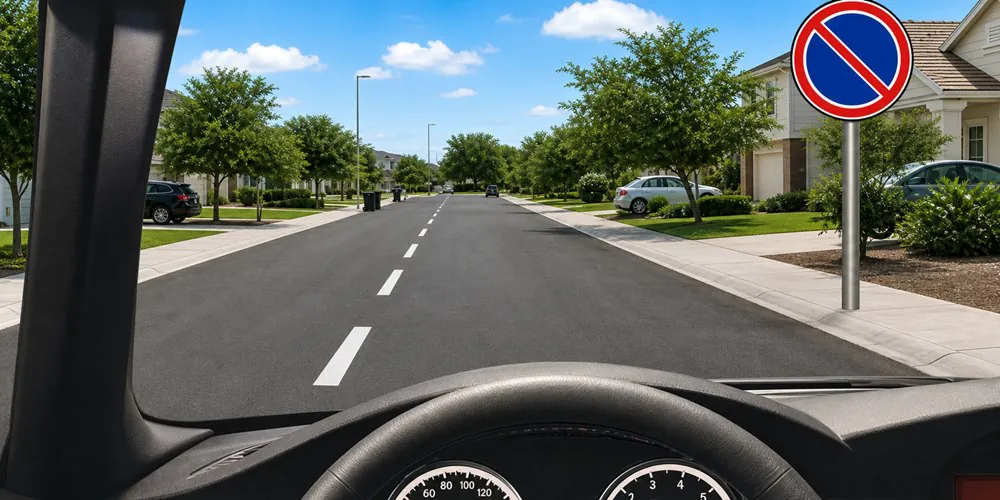
- Only public transit vehicles.
- Vehicles driven by persons with disabilities and taxis with the taximeter activated.
Answer: 2
11.PDF page 5 - g7-q011
What does this pavement marking indicate?
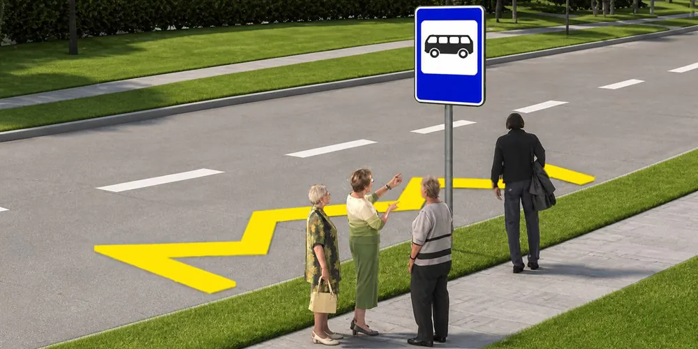
- A place for picking up and dropping off passengers.
- A public transit vehicle stop.
- A public transit vehicle stop and taxi parking area.
Answer: 2
12.PDF page 6 - g7-q012
What does the solid yellow horizontal pavement marking indicate?

- A location where stopping and parking of vehicles are prohibited.
- A location where stopping is permitted to drop off passengers or unload the vehicle.
- A location where parking of vehicles is prohibited.
Answer: 1
13.PDF page 6 - g7-q013
Is the driver permitted to cross the solid pavement marking that indicates the boundaries of vehicle parking spaces?
- Prohibited.
- Permitted.
Answer: 2
14.PDF page 7 - g7-q014
In which direction or directions indicated by the arrows is traffic permitted?
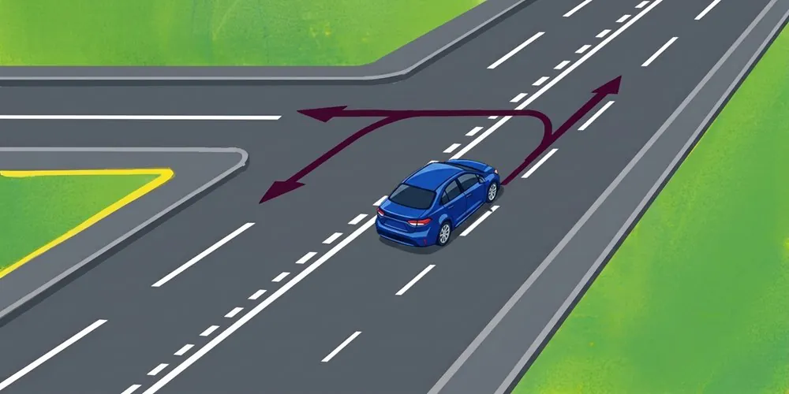
- Straight ahead only.
- To the left and by making a U-turn.
- Straight ahead, to the left, and by making a U-turn.
Answer: 1
15.PDF page 7 - g7-q015
What does this pavement marking indicate?
- A pedestrian crossing where traffic is controlled by a traffic signal.
- A location where a bicycle path crosses the roadway.
- A location where a pedestrian path crosses the roadway.
Answer: 2
16.PDF page 8 - g7-q016
How many lanes does a road have when traffic flows in opposite directions are separated by double solid lines?
- Two lanes.
- Two or three lanes.
- Three lanes.
- Four or more lanes.
Answer: 4
17.PDF page 8 - g7-q017
What do the arrows marked on the roadway warn about?
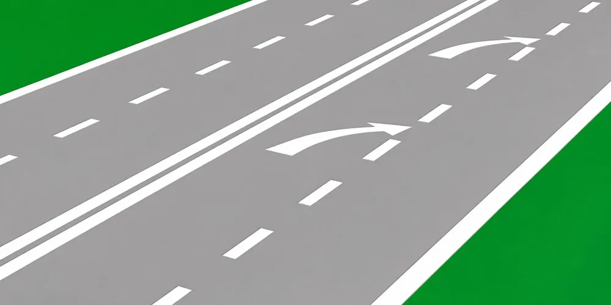
- They warn the driver of an approaching hazardous section of road.
- They warn of an approaching end of the traffic lane.
- They indicate the direction of a hazardous turn in the road.
Answer: 2
18.PDF page 9 - g7-q018
Which of these pavement-marking lines is used to designate lanes with reversible traffic?
- Line 1.
- Line 2.
- Line 3.
- Lines 2 and 3.
- Lines 3 and 4.
Answer: 2
19.PDF page 9 - g7-q019
Where is the solid yellow line indicating locations where stopping and parking are prohibited marked?
- On the roadway.
- Near the edge of the roadway.
- Near the edge of the roadway or on the upper surface of the curb.
- Only on the upper surface of the curb.
Answer: 3
20.PDF page 10 - g7-q020
With which traffic sign may a broken yellow pavement marking be used?
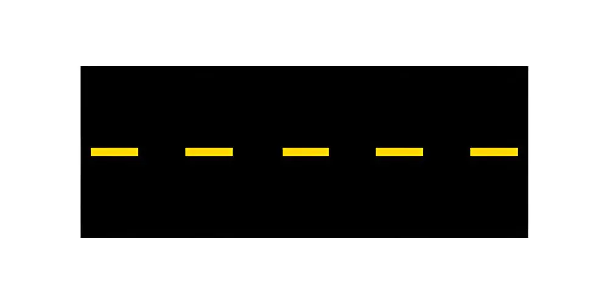
- “No Stopping.”
- “No Parking.”
- “No Parking on Odd-Numbered Days of the Month.”
Answer: 2
21.PDF page 10 - g7-q021
Which vehicles are permitted to proceed in the right lane of the roadway?
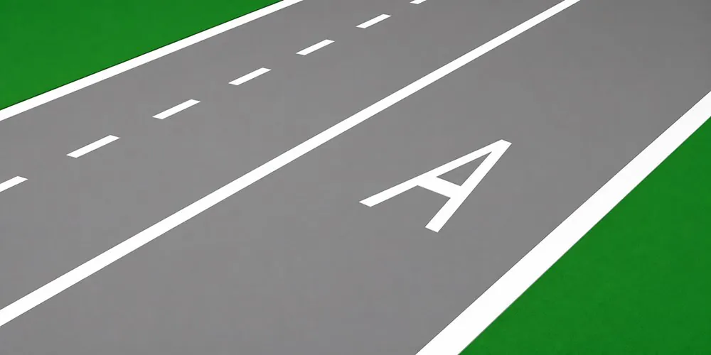
- All motor vehicles.
- Public transit vehicles and taxis.
- Bicycles only.
- Public transit vehicles only.
Answer: 4
22.PDF page 11 - g7-q022
This pavement marking has the following meaning:
- It indicates curbside parking spaces where the positioning of motor vehicles is specified.
- It indicates locations where stopping of motor vehicles is prohibited.
- It indicates public transit vehicle stops and taxi parking areas.
Answer: 3
23.PDF page 11 - g7-q023
This horizontal pavement marking indicates:

- A narrowing of the roadway where the number of traffic lanes in the given direction decreases.
- A location where the driver must stop, if necessary, to yield to vehicles proceeding on the intersecting road.
- An approach to a location where stopping is prohibited.
Answer: 2
24.PDF page 12 - g7-q024
Is it permitted to enter a channelizing island marked with wide white lines?
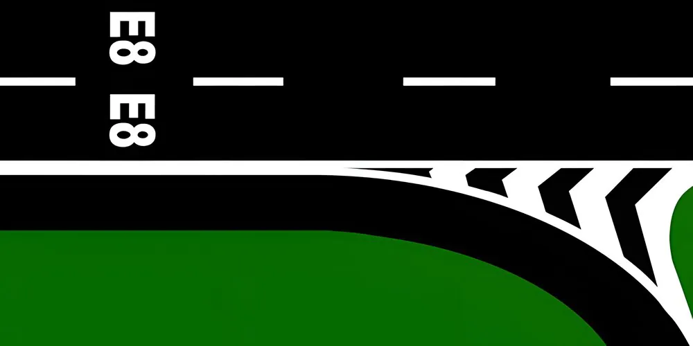
- Permitted only for stopping.
- Permitted when backing.
- Prohibited.
Answer: 3
25.PDF page 12 - g7-q025
What should the driver do when approaching an intersection with a “Stop Line” pavement marking and a green traffic signal?
(no picture)
- Stop at the “Stop Line” and then resume driving.
- Proceed through the intersection without stopping.
Answer: 2
26.PDF page 12 - g7-q026
What does this pavement marking indicate?
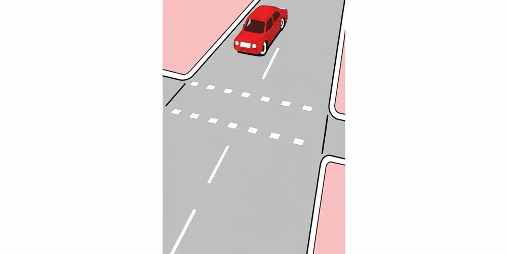
- A pedestrian crossing.
- A location where a bicycle path crosses the roadway.
- A location designated for driving livestock across the road.
Answer: 2
27.PDF page 13 - g7-q027
Where must the driver stop the vehicle when this pavement marking is present?
- At the pavement marking.
- On the pavement marking.
- At least 5 m before the pavement marking.
Answer: 1
28.PDF page 13 - g7-q028
What does this pavement marking mean?
- A traffic lane designated for public transit vehicles.
- A traffic lane designated for special-purpose vehicles.
- It indicates the boundaries of traffic lanes where reversible traffic control is in effect.
Answer: 3
29.PDF page 14 - g7-q029
Is it permitted to make a U-turn at the indicated location?
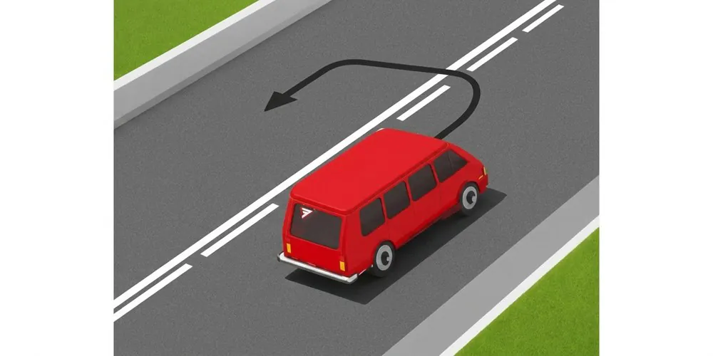
- Permitted.
- Prohibited.
Answer: 1
30.PDF page 14 - g7-q030
When this pavement marking is present, is the driver of a bus operating on a tourist route permitted to enter the lane marked “A”?
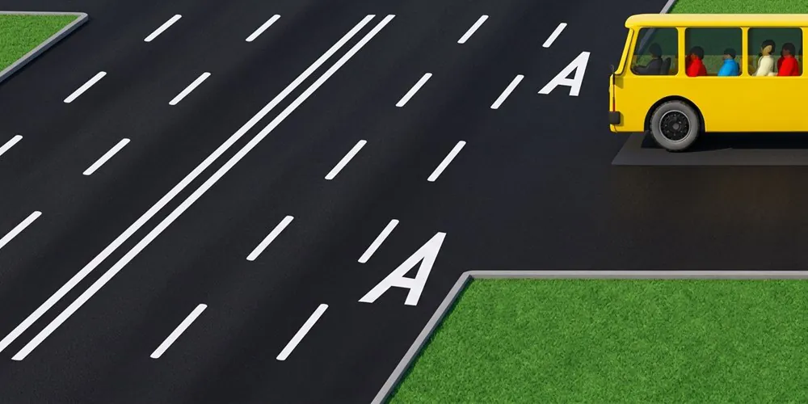
- Permitted.
- Prohibited.
Answer: 1
31.PDF page 15 - g7-q031
What does the wide broken-line pavement marking indicate?
- The boundary between the roadway and the shoulder.
- The boundary between a main traffic lane of the roadway and an acceleration lane.
- The boundary between a main traffic lane of the roadway and a deceleration lane.
Answer: 2
32.PDF page 15 - g7-q032
Which automobile is permitted to stop within the area where these signs are in effect?
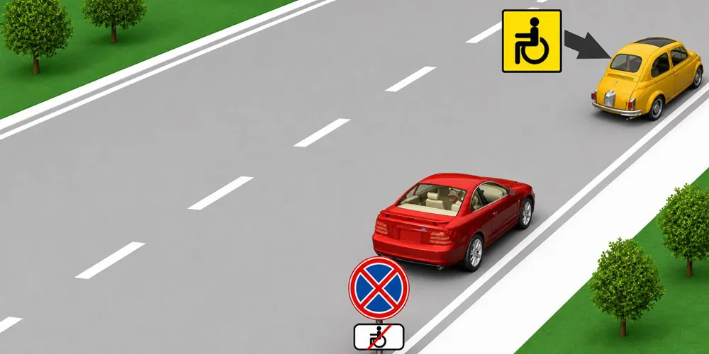
- The red automobile.
- Both automobiles.
- Neither automobile.
- The yellow automobile displaying the “Disabled” identification sign.
Answer: 4
33.PDF page 16 - g7-q033
In which image has the driver stopped correctly to drop off passengers?
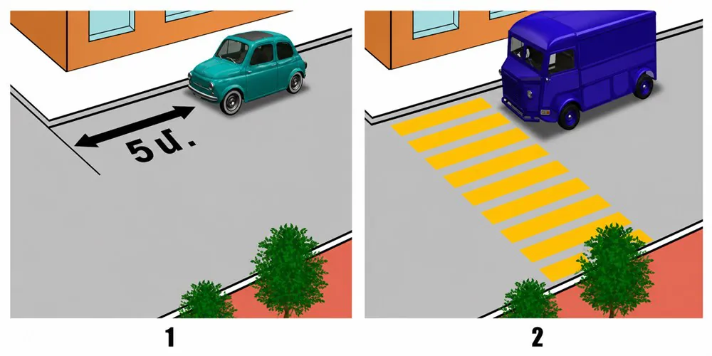
- In the left image.
- In both images.
- In the right image.
Answer: 1
34.PDF page 16 - g7-q034
The signal to stop a train is:
(no picture)
- A circular motion of the arm (during daylight, with a brightly colored cloth or another clearly visible object; at night, with a torch or lantern).
- An arm raised above the head holding a disk or red flag.
- An arm extended forward.
- An arm extended forward and moved up and down.
Answer: 1
35.PDF page 16 - g7-q035
In populated areas, on roads with one traffic lane in each direction and no tram tracks in the center, stopping and parking on the left side of the road are:
(no picture)
- Permitted.
- Prohibited.
Answer: 1
36.PDF page 16 - g7-q036
At what distance from the “Stop Line” or the “STOP” sign must a vehicle be stopped in order to yield to an approaching train?
(no picture)
- 1.5 m.
- 2.5 m.
- 5 m.
- 10 m.
- Immediately at the “Stop Line” and/or the sign.
Answer: 5
37.PDF page 17 - g7-q037
Is stopping at the indicated location permitted?
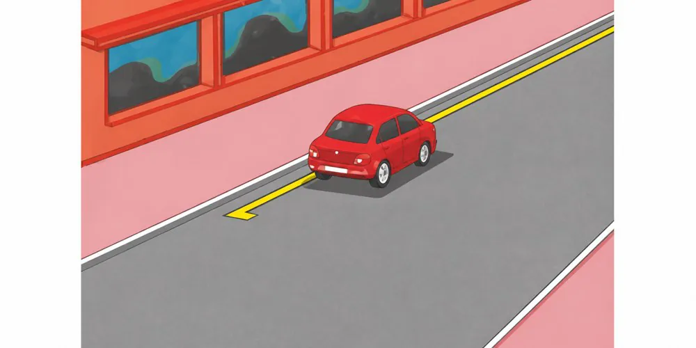
- Permitted.
- Prohibited.
Answer: 2
38.PDF page 17 - g7-q038
Is the automobile permitted to stop at this location?
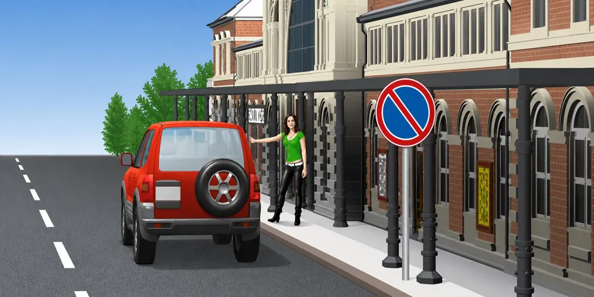
- Prohibited because the distance between the broken pavement marking and the stopped vehicle is less than 3 m.
- Prohibited on even-numbered days of the month.
- Permitted.
Answer: 3
39.PDF page 18 - g7-q039
Which vehicle driver has violated the parking rules?
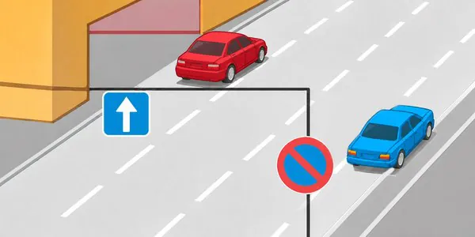
- The driver of the blue automobile.
- The driver of the red automobile.
- Both drivers have violated the rules.
- Neither driver has violated the rules.
Answer: 3
40.PDF page 18 - g7-q040
Outside populated areas, where is parking for extended rest, overnight stays, or other purposes permitted?
(no picture)
- On the shoulders of the road.
- In areas designated for parking or outside the boundaries of the road.
- On the right side of the roadway, provided it does not interfere with other vehicle traffic.
- On the left side of the road, provided road traffic safety is ensured.
Answer: 2
41.PDF page 18 - g7-q041
Stopping is prohibited if the distance between the solid line and the stopped vehicle is:
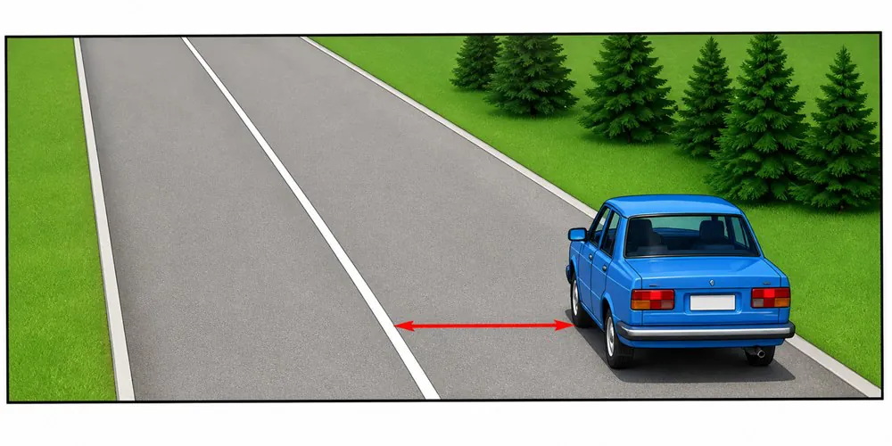
- 6 m.
- 5.5 m.
- 4 m.
- 3.5 m.
- 2.5 m.
Answer: 5
42.PDF page 19 - g7-q042
If traffic across a railroad crossing is prohibited and there are no traffic signals, traffic signs, pavement markings, or barrier gate, the driver must stop:
(no picture)
- At least 5 m from the nearest rail.
- At least 7 m from the nearest rail.
- At least 10 m from the nearest rail.
Answer: 3
43.PDF page 19 - g7-q043
Within what distance of a railroad crossing is vehicle parking prohibited?
(no picture)
- 15 m.
- 50 m.
- 100 m.
- 150 m.
Answer: 1
44.PDF page 19 - g7-q044
Which answer correctly identifies the drivers who have violated the stopping rules?
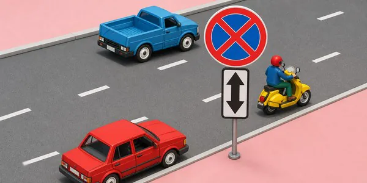
- The drivers of the red automobile and the motorcycle.
- The driver of the blue automobile.
- The motorcycle operator.
- The drivers of all the vehicles.
Answer: 4
45.PDF page 20 - g7-q045
Which vehicle drivers have stopped incorrectly to drop off passengers?
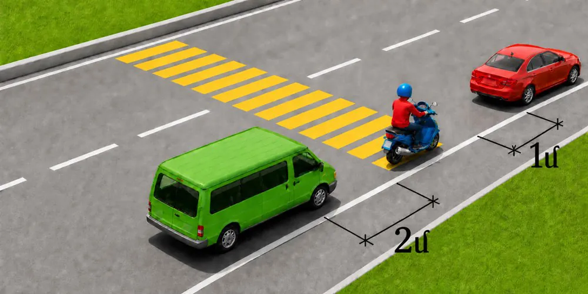
- The passenger-car driver.
- The motorcycle operator.
- The bus driver.
- The motorcycle operator and the bus driver.
- All drivers.
Answer: 4
46.PDF page 20 - g7-q046
If traffic across a railroad crossing is prohibited and there are no traffic signals, traffic signs, or pavement markings, the driver must stop:
(no picture)
- At least 5 m before the barrier gate.
- At least 3 m before the barrier gate.
- Immediately before the barrier gate.
Answer: 1
47.PDF page 20 - g7-q047
What does the letter “A” marked in a traffic lane of the roadway mean?
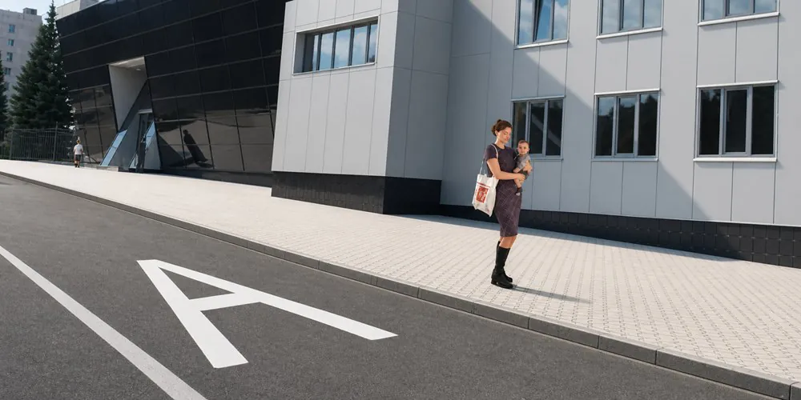
- The road (route) number.
- A special lane designated for public transit vehicles.
- A special lane designated for category A vehicles.
Answer: 2
48.PDF page 21 - g7-q048
Is the vehicle permitted to stop at the indicated location to drop off passengers?
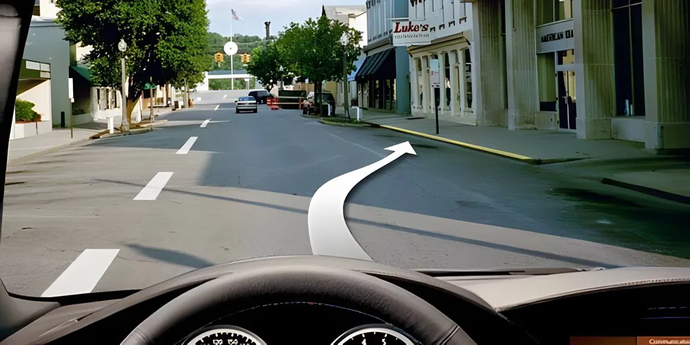
- Permitted.
- Prohibited.
- Permitted, but only by driving onto the sidewalk.
Answer: 2
49.PDF page 21 - g7-q049
Is it permitted to continue in the direction indicated by the arrow?
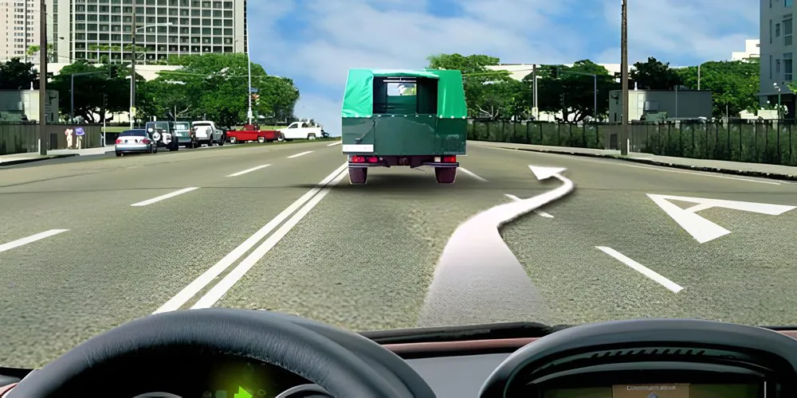
- Prohibited.
- Permitted in all cases.
- Permitted for the purpose of stopping to drop off passengers.
- Permitted for the purpose of passing the truck.
Answer: 3
50.PDF page 22 - g7-q050
This type of vertical pavement marking indicates:
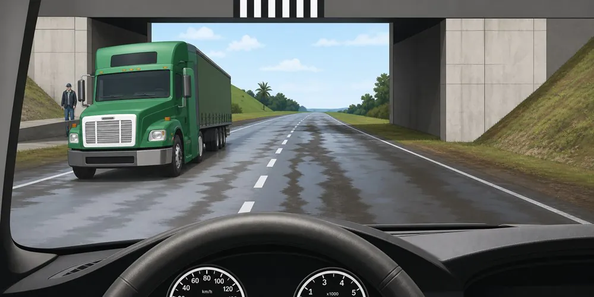
- The lower edges of a bridge or tunnel.
- The entrance to an unlit tunnel.
- Any element of a road structure that creates a hazard for traffic.
Answer: 1
51.PDF page 22 - g7-q051
What should the passenger-car driver do if the bus driver has begun braking?
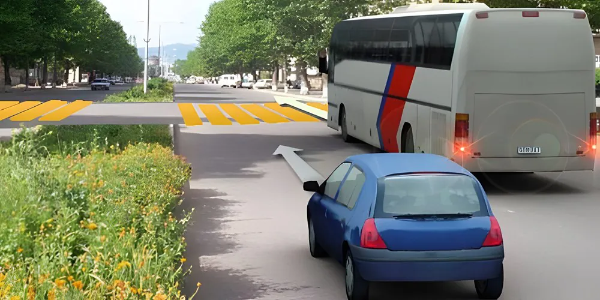
- Continue driving.
- Reduce speed, stop if necessary, and continue after making sure there are no pedestrians in the crossing.
- Stop and continue only after the bus resumes driving.
Answer: 2
52.PDF page 23 - g7-q052
The bus driver has stopped to pick up passengers. The passenger car is proceeding at a speed of 70 km/h. Which vehicle driver is violating the requirements of the traffic rules?
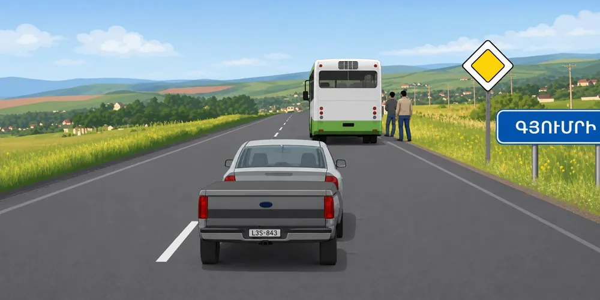
- Neither driver.
- The bus driver.
- The passenger-car driver.
- Both drivers.
Answer: 1
53.PDF page 23 - g7-q053
Where must the driver stop in this situation?
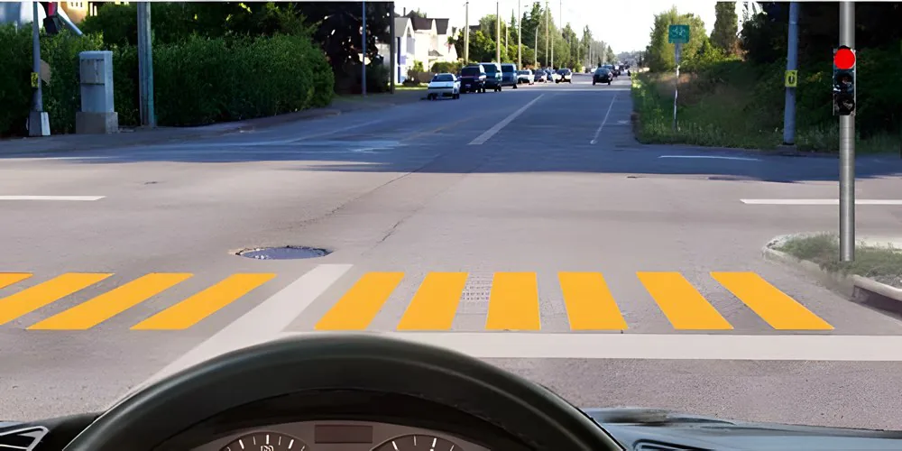
- Stopping is not required.
- Before the traffic signal.
- Before the “Stop Line” pavement marking.
- Before the intersection of the traffic lanes.
Answer: 3
54.PDF page 24 - g7-q054
The bus has stopped to yield to a pedestrian. In this situation, is the passenger-car driver violating the requirements of the traffic rules?
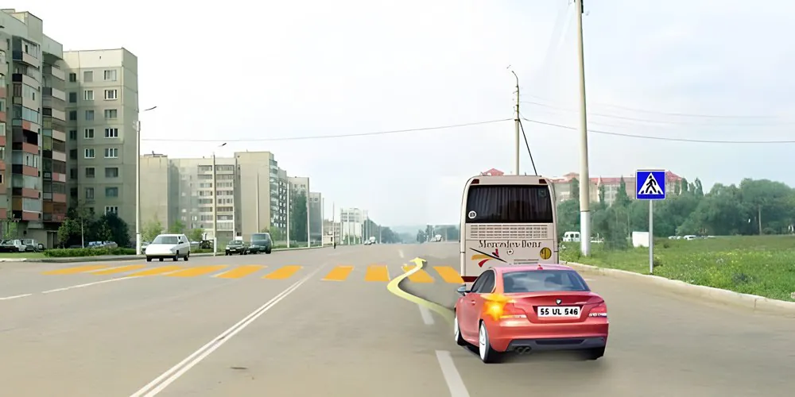
- Yes.
- No.
Answer: 1
55.PDF page 24 - g7-q055
Where must the bus driver stop in order to yield to the passenger car before continuing to the left?
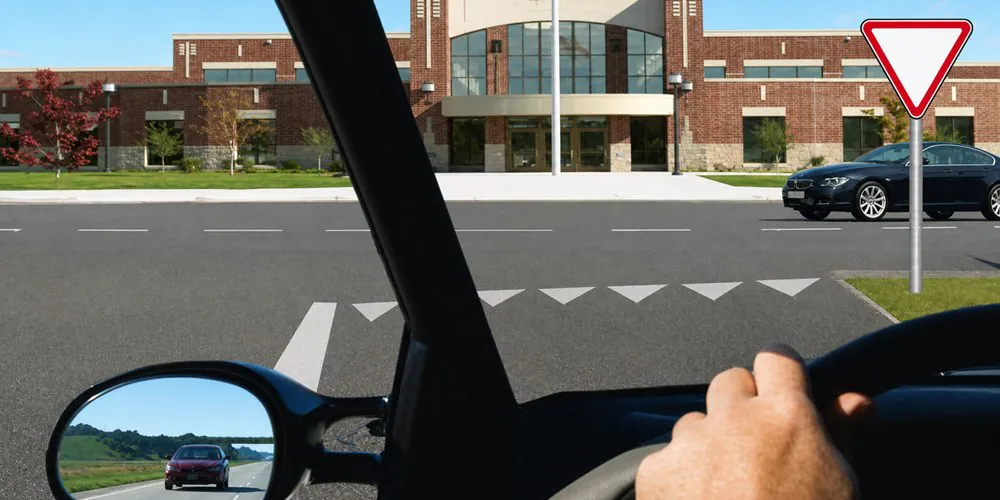
- Before the traffic sign.
- At the pavement marking.
- At a safe location at the driver’s discretion.
Answer: 2
56.PDF page 25 - g7-q056
Where must the driver stop in this situation?
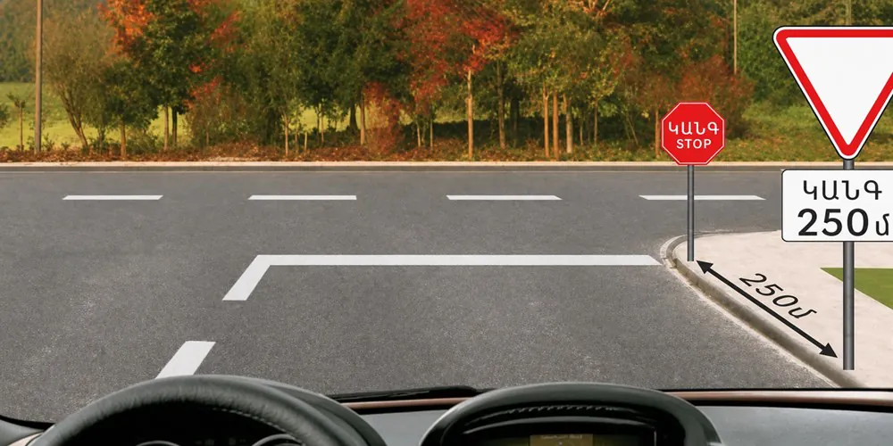
- At the first traffic sign.
- Before the “Stop Line” pavement marking.
- At the second traffic sign.
- Stopping is not required.
Answer: 2
57.PDF page 25 - g7-q057
Which vehicles are permitted to stop within the area where this sign is in effect?
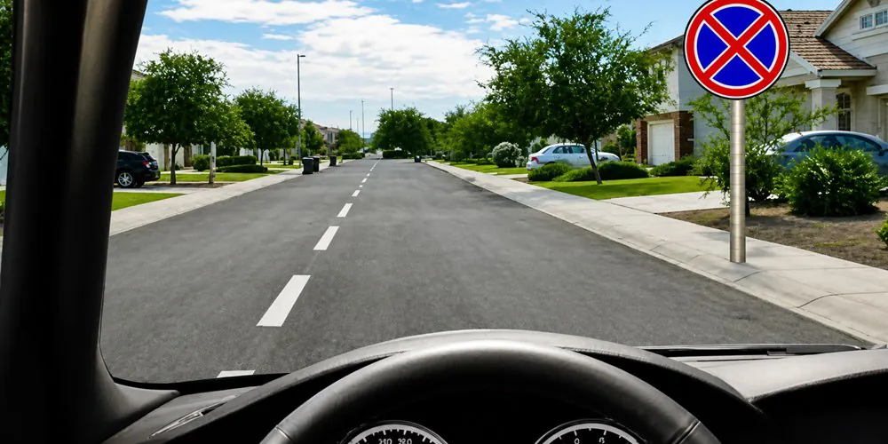
- Only public transit vehicles.
- Only vehicles driven by persons with disabilities.
- Only taxis with the taximeter activated.
- Stopping is prohibited for all vehicles.
Answer: 4
58.PDF page 26 - g7-q058
Within the area where these traffic signs are in effect, is stopping to pick up passengers permitted?
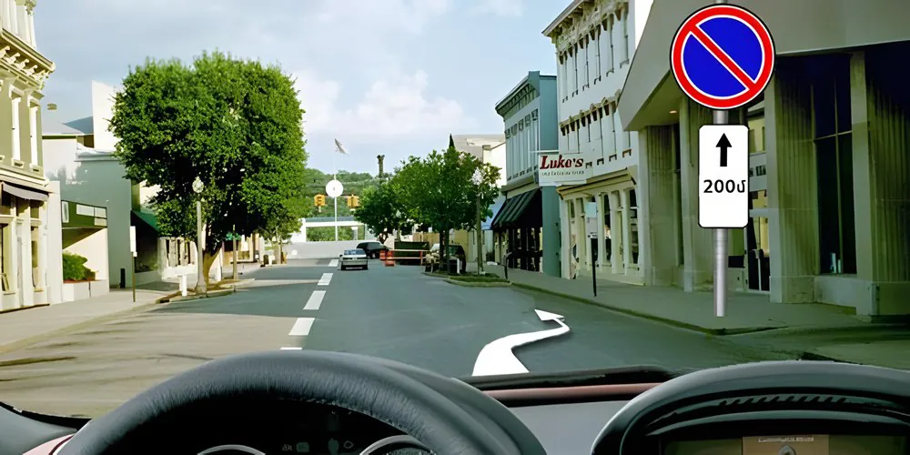
- Permitted.
- Prohibited.
Answer: 1
59.PDF page 26 - g7-q059
For which vehicles is the lane marked with the letter “A” designated?
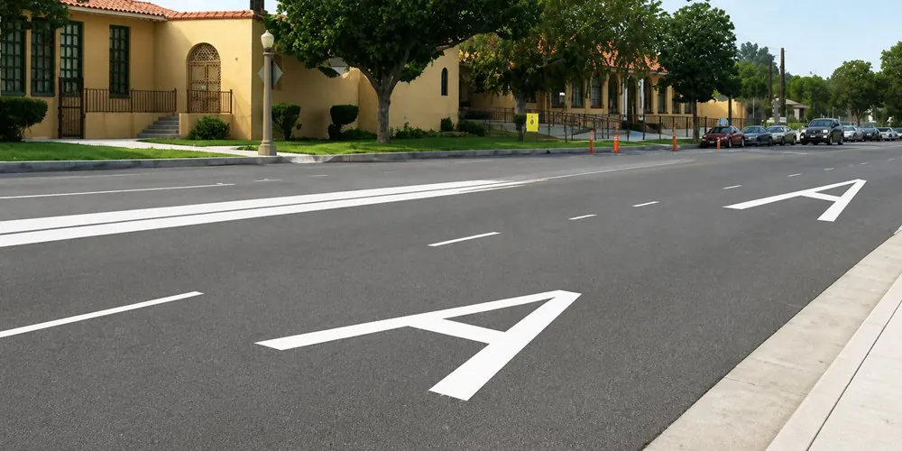
- Only buses operating on an established route.
- Trolleybuses and taxis.
- Public transit vehicles.
Answer: 3
60.PDF page 26 - g7-q060
Is stopping permitted at the indicated location?
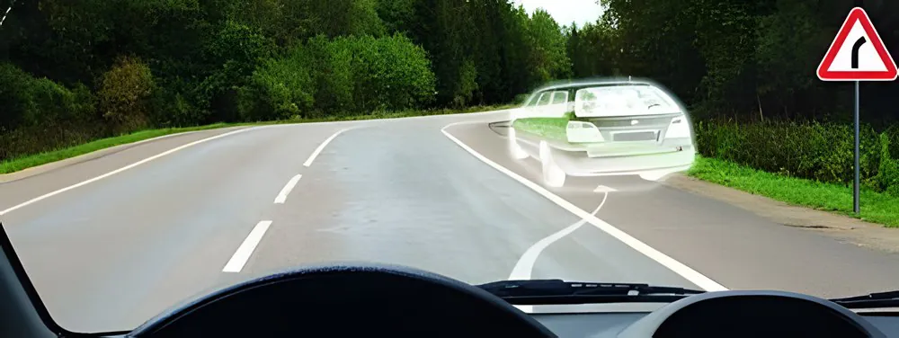
- Yes.
- No.
Answer: 1
61.PDF page 27 - g7-q061
Is parking permitted in this situation?
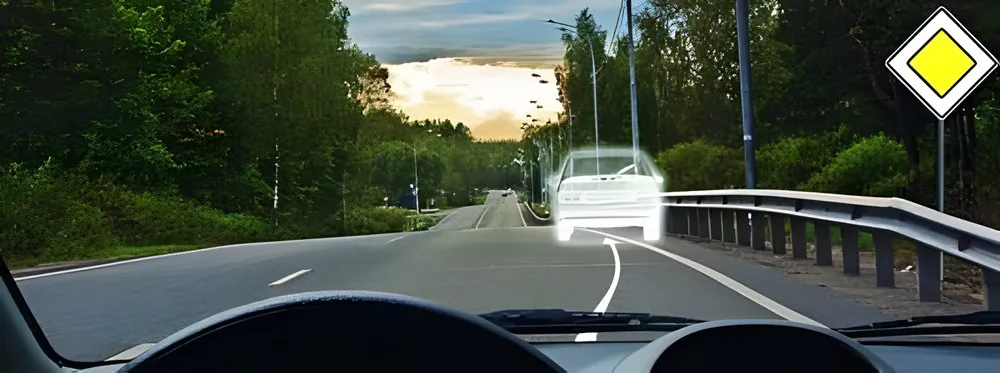
- Yes.
- Only during daylight hours.
- No.
Answer: 3
62.PDF page 27 - g7-q062
At which of the indicated locations is stopping permitted?
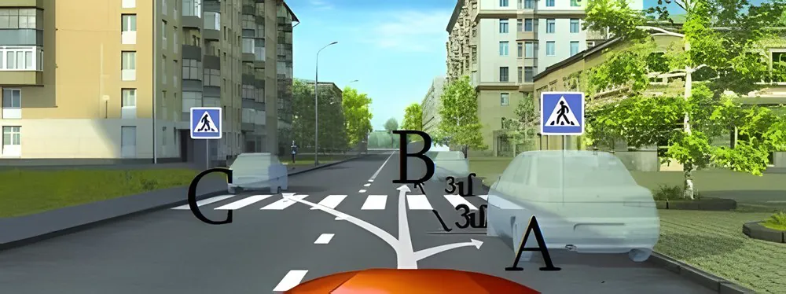
- Only A.
- Only B.
- Only B and C.
- At none of the locations.
Answer: 2
63.PDF page 27 - g7-q063
At which location is stopping permitted?
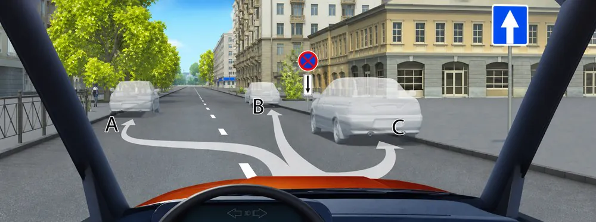
- Only B.
- Only A and B.
- Only A and C.
- At none of the locations.
Answer: 2
64.PDF page 28 - g7-q064
Is stopping permitted at the indicated location?
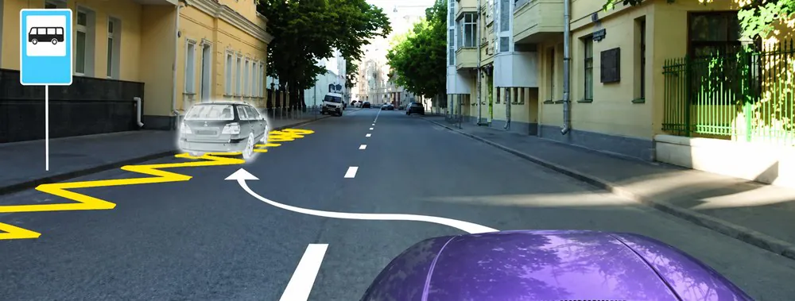
- Yes.
- Prohibited.
- Only for the purpose of picking up a passenger.
Answer: 2
65.PDF page 28 - g7-q065
In the indicated situation, is stopping permitted for the purpose of picking up a passenger?
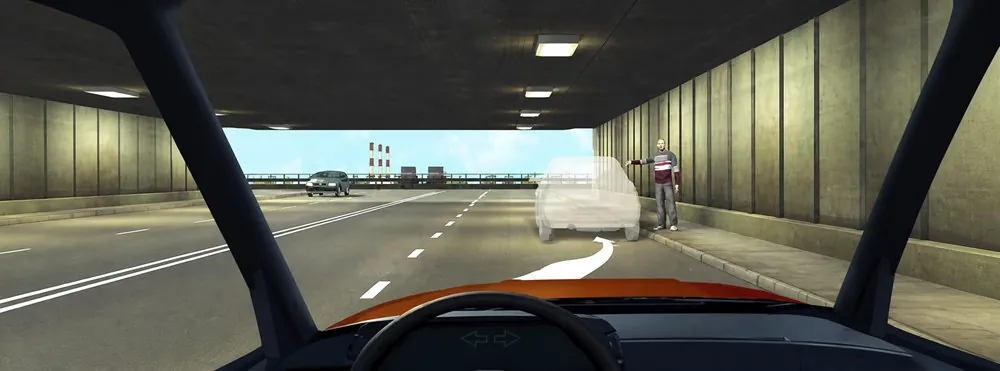
- Yes.
- No.
Answer: 2
66.PDF page 28 - g7-q066
In which of the indicated cases is stopping permitted?
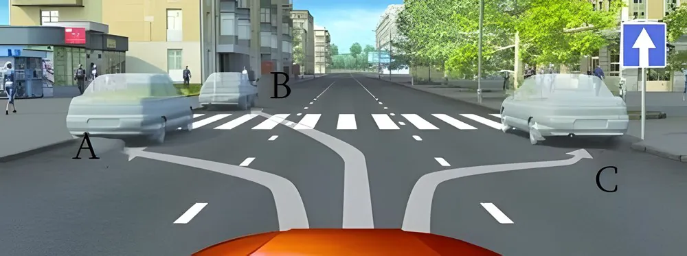
- Only B.
- Only C.
- A and C.
- In all cases.
Answer: 1
67.PDF page 29 - g7-q067
Stopping is prohibited:
(no picture)
- At a railroad crossing.
- At a railroad crossing and within 50 m of it.
- At a railroad crossing and within 50 m before it.
Answer: 1
68.PDF page 29 - g7-q068
Parking is prohibited:
(no picture)
- At a railroad crossing.
- At a railroad crossing and within 50 m of it.
- At a railroad crossing and within 50 m before it.
Answer: 2
69.PDF page 29 - g7-q069
Which option shows a vehicle stopped correctly?
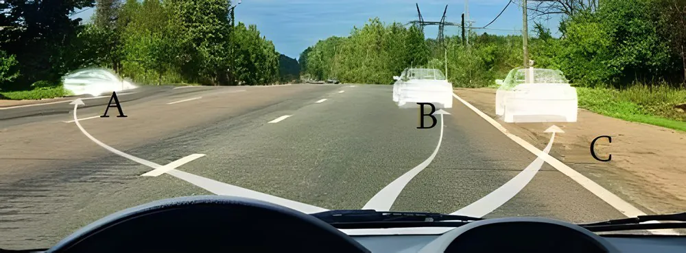
- Only C.
- Only A and C.
- Only B and C.
- In all three cases.
Answer: 1
70.PDF page 29 - g7-q070
Must you yield to the truck?
- Yes.
- No.
Answer: 2
71.PDF page 30 - g7-q071
Stopping at the indicated location is:
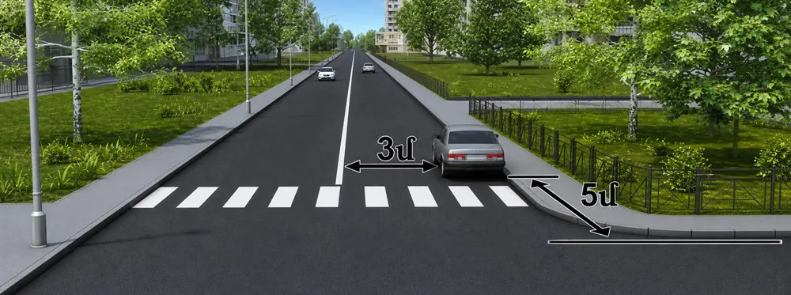
- Permitted.
- Prohibited.
Answer: 1
72.PDF page 30 - g7-q072
When is it permitted to cross the pavement marking?
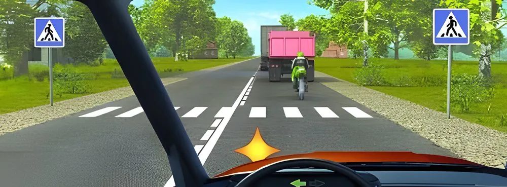
- Before the pedestrian crossing.
- After the pedestrian crossing.
Answer: 2
73.PDF page 30 - g7-q073
Has the truck driver violated the stopping rules?
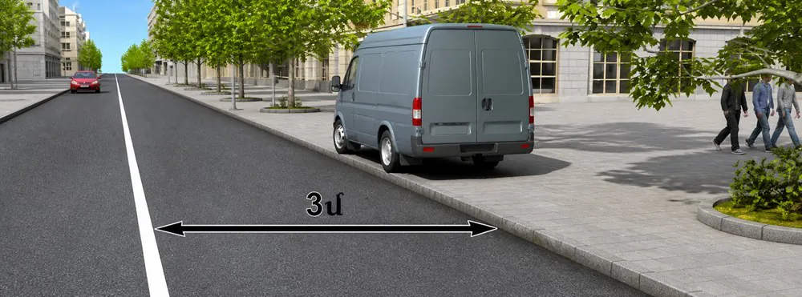
- Yes.
- No.
Answer: 1
74.PDF page 31 - g7-q074
In the indicated situation, is stopping permitted for the purpose of picking up a passenger?
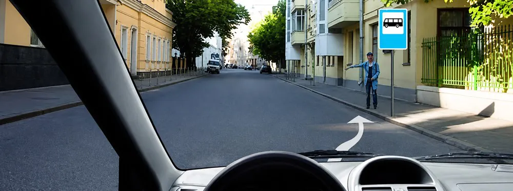
- Yes.
- Permitted only for the driver of a public transit vehicle.
- No.
Answer: 2
75.PDF page 31 - g7-q075
Which driver has violated the parking rules?
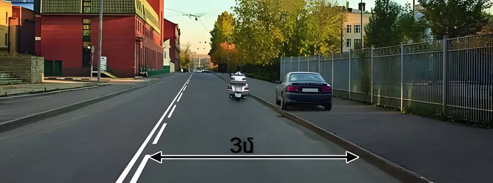
- Both drivers.
- Only the passenger-car driver.
- Only the driver of the motorcycle.
- No one.
Answer: 2
76.PDF page 31 - g7-q076
Which option shows a driver parked in a prohibited position?
- Only A.
- Only B.
Answer: 1
77.PDF page 32 - g7-q077
Is stopping permitted at the indicated location?
- Only for the purpose of dropping off a passenger.
- Prohibited.
Answer: 2
78.PDF page 32 - g7-q078
At which of the indicated locations is parking permitted?
- Only A.
- Only C.
- A or C.
Answer: 3
79.PDF page 32 - g7-q079
Is stopping permitted at the indicated location?
- No.
- Yes.
Answer: 1
80.PDF page 33 - g7-q080
Who has violated the stopping rules?
- Both drivers.
- Only the truck driver.
- Only the passenger-car driver.
- No one.
Answer: 2
81.PDF page 33 - g7-q081
In which case has the driver violated the stopping rules?

- Only A.
- Only B.
- Neither driver.
- Both drivers have violated the rules.
Answer: 3
82.PDF page 33 - g7-q082
In which case has the driver violated the parking rules?
same image object is also used by question 81
- Only A.
- Only B.
- Both drivers have violated the rules.
- Neither driver.
Answer: 3
83.PDF page 34 - g7-q083
Is parking permitted at the indicated location?
- Prohibited.
- Permitted.
Answer: 1
84.PDF page 34 - g7-q084
Is stopping on the bridge permitted for the purpose of picking up a passenger?
- Yes.
- No.
Answer: 2
85.PDF page 34 - g7-q085
Which driver has violated the stopping rules?
- The automobile driver.
- The driver of the motorcycle.
- Both drivers.
- No one.
Answer: 3
86.PDF page 35 - g7-q086
Which driver has stopped correctly?
- Only C.
- B or C.
- All drivers.
Answer: 1
87.PDF page 35 - g7-q087
Is stopping permitted at the indicated location?
- Yes.
- No.
Answer: 2
88.PDF page 35 - g7-q088
Which driver has violated the parking rules?
- The truck driver.
- The passenger-car driver.
- No one.
- Both drivers.
Answer: 2
89.PDF page 36 - g7-q089
Is the driver of a truck weighing less than 3.5 metric tons permitted to park in the manner indicated on the supplemental plaque?
- Yes.
- No.
Answer: 2
90.PDF page 36 - g7-q090
Is stopping permitted at the indicated location?
- Yes.
- No.
Answer: 2
91.PDF page 36 - g7-q091
At which of the indicated locations is stopping permitted?
- Only A.
- Only B.
- At any of the locations.
Answer: 1
92.PDF page 37 - g7-q092
Parking at the indicated location is:
- Permitted.
- Prohibited.
Answer: 1
93.PDF page 37 - g7-q093
Which driver has violated the parking rules?
- Only A.
- Only B.
- No one.
Answer: 2
94.PDF page 37 - g7-q094
Stopping at the indicated location is:
- Permitted.
- Permitted for the purpose of picking up a passenger.
- Prohibited.
Answer: 3
95.PDF page 38 - g7-q095
Which driver has violated the stopping rules?
- Only B.
- Only B and C.
- All of them.
Answer: 2
96.PDF page 38 - g7-q096
Are the drivers permitted to stop at the indicated location?
- Yes.
- Only the driver of the motorcycle.
- No.
Answer: 3
97.PDF page 38 - g7-q097
In which of the indicated cases is stopping permitted?
- Only C.
- Only B and C.
- In all cases.
Answer: 3
98.PDF page 39 - g7-q098
Is stopping in this position permitted?
- Yes.
- Only for passenger cars.
- No.
Answer: 3
99.PDF page 39 - g7-q099
Stopping at the indicated location is:
- Permitted.
- Permitted if the distance from the vehicle to the pavement marking is more than 3 meters.
- Prohibited.
Answer: 3
100.PDF page 39 - g7-q100
This pavement marking indicates:
- Right-of-way when changing lanes.
- Approach to a curved section of road.
- Approach to the end of the lane.
Answer: 3
101.PDF page 40 - g7-q101
What does this pavement marking indicate?
- Approach to the “Stop Line” at a signal-controlled intersection.
- Approach to the “Stop Line” pavement marking when it is used together with a “STOP” sign.
- Approach to a barrier gate.
Answer: 2
102.PDF page 40 - g7-q102
Vertical markings on barriers indicate:
- Approach to a railroad crossing.
- Approach to a dangerous intersection.
- Movement along a dangerous section of road.
Answer: 3
103.PDF page 40 - g7-q103
This triangular pavement marking indicates:
- Approach to a dangerous turn.
- Approach to a location where drivers must yield.
- Approach to a location where vehicles must stop.
Answer: 2
104.PDF page 41 - g7-q104
These broken pavement markings within the intersection indicate:
- Permitted directions of traffic.
- Traffic lanes within the intersection.
Answer: 2
105.PDF page 41 - g7-q105
With this pavement marking, passing is:
- Permitted.
- Prohibited.
- Permitted only when passing tractors.
Answer: 1
106.PDF page 41 - g7-q106
This vertical pavement marking:
- Marks all vertical elements adjacent to the roadway.
- Marks only those elements of road structures that present a hazard to drivers.
Answer: 2
107.PDF page 42 - g7-q107
With this pavement marking, may you enter the intersection if doing so does not interfere with the passenger-car driver?
- Yes.
- No.
Answer: 2
108.PDF page 42 - g7-q108
Which driver following the indicated path does not violate the pavement-marking requirements?
- Only A.
- Only B.
- Both violate the requirements.
- Neither violates the requirements.
Answer: 2
109.PDF page 42 - g7-q109
In which case is it permitted to cross the solid pavement marking?
- Only B, when stopping.
- In neither case.
- In both cases, when stopping.
Answer: 1
110.PDF page 43 - g7-q110
What does the broken pavement marking indicate?
- The right to stop on the shoulder.
- The edges of the roadway on a two-lane road.
- The right to proceed on the shoulder.
Answer: 2
111.PDF page 43 - g7-q111
In this situation, proceeding along this path is:
- Permitted only when passing.
- Permitted.
- Prohibited.
Answer: 3
112.PDF page 43 - g7-q112
Is parking permitted at the indicated location?
- Permitted.
- Permitted without driving onto the sidewalk.
- Prohibited.
Answer: 3
113.PDF page 44 - g7-q113
With this pavement marking, passing is:
- Permitted.
- Permitted if the vehicle ahead is a slow-moving vehicle.
- Prohibited.
Answer: 3
114.PDF page 44 - g7-q114
May you continue beyond the sign?
- Yes.
- Yes, up to the “Stop Line.”
- No.
Answer: 2
115.PDF page 44 - g7-q115
When orange and white pavement markings conflict, drivers:
(no picture)
- May follow whichever pavement marking is more convenient.
- Must follow the white pavement marking.
- Must follow the orange pavement marking.
Answer: 3
116.PDF page 45 - g7-q116
Which driver is permitted to cross the solid pavement marking when stopping?
- Both drivers.
- The driver proceeding from the opposite direction.
- Neither driver is permitted.
Answer: 2
117.PDF page 45 - g7-q117
Is stopping permitted at the indicated location?
- For motorcycles only.
- No.
- Yes.
Answer: 3
118.PDF page 45 - g7-q118
This pavement marking:
- Indicates the boundaries of a Residential Zone.
- Indicates a speed hump.
- Prohibits further traffic.
Answer: 2
119.PDF page 46 - g7-q119
This pavement marking prohibits:
- Passing.
- Driving around an obstruction.
- Making a U-turn.
- Traffic to the left of it or over it.
Answer: 4
120.PDF page 46 - g7-q120
This pavement marking indicates:
- The route or road number.
- The recommended speed.
- The maximum permitted speed on the indicated road section.
Answer: 3
121.PDF page 46 - g7-q121
The marking applied to the roadway indicates:
- The distance from the nearest intersection.
- The distance from the nearest populated area.
- The road or route number.
Answer: 3
122.PDF page 47 - g7-q122
On which side may the obstruction be passed?
- Only A.
- Only B.
- Either side.
Answer: 1
123.PDF page 47 - g7-q123
Which vehicles may use the rightmost lane of this road?
- Trolleybuses and public transit buses.
- Trolleybuses and buses.
- Buses only.
Answer: 1
124.PDF page 47 - g7-q124
Is parking permitted at the indicated location?

- Prohibited.
- Only on the sidewalk.
- Only for motorcycles.
- Permitted.
Answer: 1
125.PDF page 48 - g7-q125
The increasing length of the broken pavement-marking segments indicates:
- Approach to the end of the lane.
- Approach to a dangerous road section.
- That the pavement marking will soon become a solid line.
Answer: 3
126.PDF page 48 - g7-q126
In the indicated situation, proceeding straight ahead is:
- Prohibited.
- Permitted.
- Permitted after changing to the right lane.
Answer: 3
127.PDF page 48 - g7-q127
How many traffic lanes does this road have?
- Two.
- Four.
Answer: 2